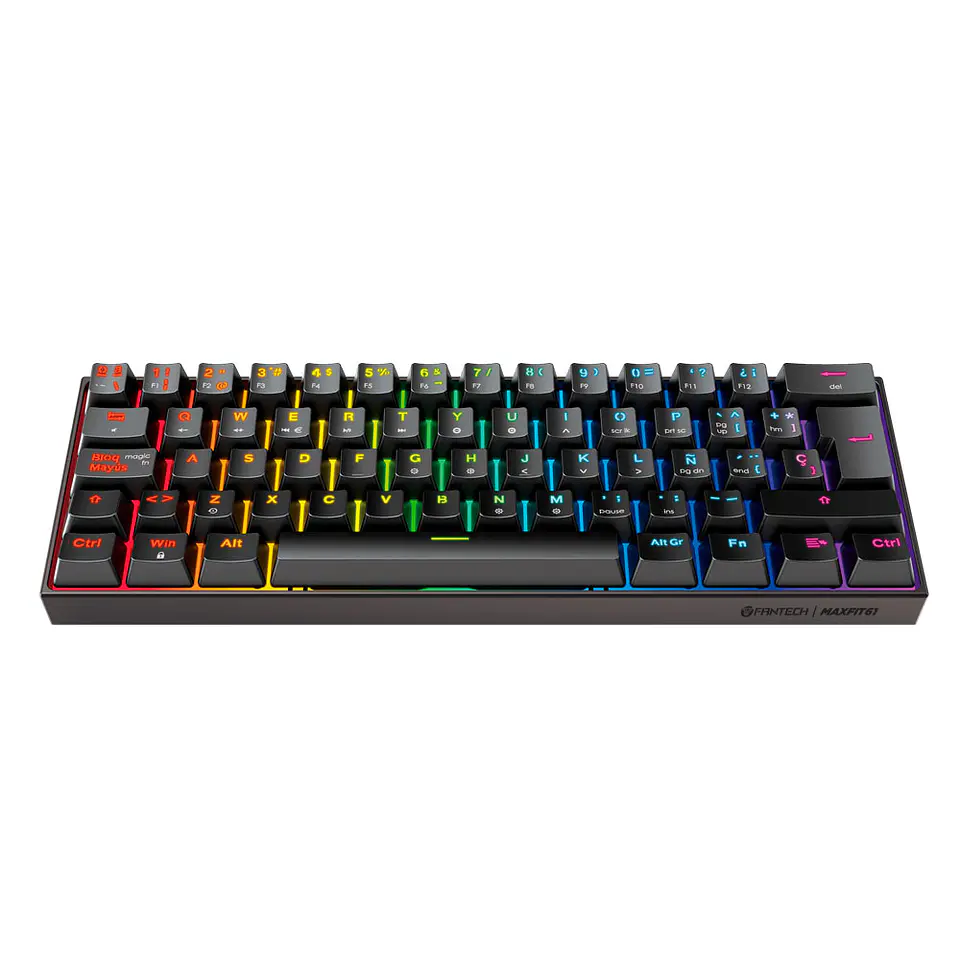

Elegir un teclado adecuado puede mejorar considerablemente la experiencia al utilizar un computador. Actualmente existen diferentes tipos de teclados, por lo que es importante considerar el uso que se le dará antes de realizar una compra.
Existen teclados tradicionales y teclados mecánicos. Los teclados tradicionales suelen ser una alternativa práctica para tareas cotidianas, como estudiar, trabajar o navegar por internet.
Los teclados mecánicos, por otro lado, son muy utilizados por personas que juegan videojuegos o escriben durante muchas horas, debido a la respuesta de sus teclas y a las diferentes opciones disponibles.
La comodidad también es importante. Un teclado debe permitir mantener una posición adecuada de las manos y contar con un tamaño que se adapte al espacio disponible.
Algunos modelos también incluyen iluminación RGB, teclas adicionales y diferentes diseños que pueden adaptarse a las preferencias de cada usuario.
Para trabajar o estudiar puede ser suficiente un teclado sencillo y cómodo. Para videojuegos, en cambio, algunos usuarios prefieren modelos mecánicos con teclas especiales y una respuesta rápida.
Antes de comprar un teclado es recomendable considerar el uso que tendrá, el espacio disponible, la comodidad y las características que realmente se necesitan. De esta forma es posible elegir un producto adecuado sin pagar por funciones que no serán utilizadas.